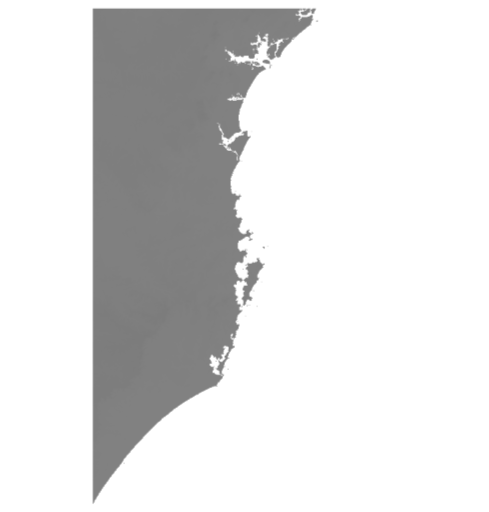
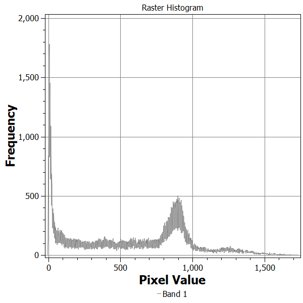
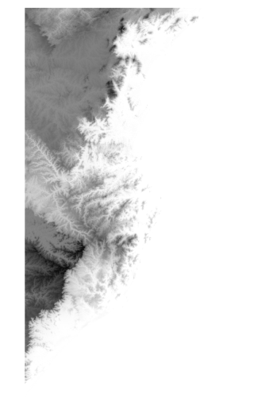
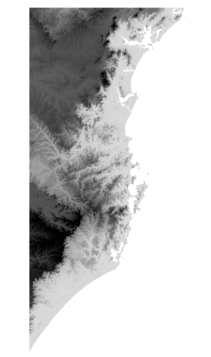
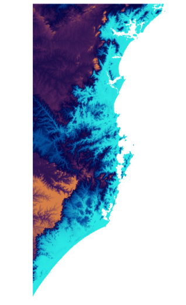
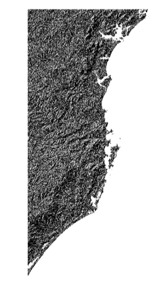
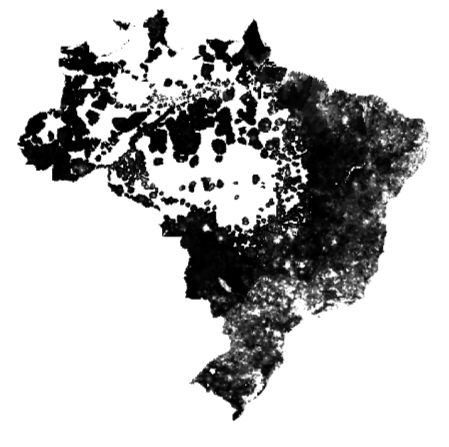

Introduction to Spatial Analysis
Day 3 - Raster Data
Jonathan Phillips
January, 2019
Raster Data

Raster Data
- Satellites/planes capture a range of data depending on their sensors
- Visible light, ultravoilet light, altitude, rain, gravity, etc.
- Each ‘band’ is a separate raster image
- One band = greyscale
- Multi-band = ex. Red, Green and Blue
Raster Data
- Not a shapefile, because any image file (TIFF, BMP, PNG, JPEG) can be used
- Don’t think of colours, but numeric values for every pixel
- But we need to know where to map the pixels to the earth’s surface
- So usually a ‘GeoTIFF’
- Location defined by the upper-right pixel
- Projection is still vital!
- Resolution determined by pixel size
- Google Maps is about 10m - 50cm resolution, depending on location
- Storage is a challenge
Raster Data

Visualizing Raster Data
- Raster data often makes no sense to the human eye
- May appear all black, or all white
- We have to focus on the interesting range of the data to make a clear contrast
- QGIS tries to do this for us
- Or we can ‘manipulate’ it manually
- ‘Pseudocolour’ is also useful for single band images
Visualizing Raster Data

Visualizing Raster Data

Visualizing Raster Data

Visualizing Raster Data

Visualizing Raster Data

Visualizing Raster Data

Raster Calculations
- Which pixels (places) are above >1000m?
- Use a raster calculator
- Pixels which are ‘TRUE’ show up in white

Raster Calculations
- We can combine multiple rasters using basic maths
- Pixel values in each cell are combined to create a new raster
Raster Calculations
- Population change (as measured by night lights)
## Warning: Transformation introduced infinite values in discrete y-axis

Raster Calculations
- Population change (as measured by night lights)
## Warning: Transformation introduced infinite values in discrete y-axis

Raster Calculations
- Population change (as measured by night lights)
## Warning in log(layer): NaNs produced
## Warning in self$trans$transform(x): NaNs produced
## Warning: Transformation introduced infinite values in discrete y-axis

Rasters and Vectors
- To change the boundaries of the raster we can ‘clip’ it to a vector shapefile
